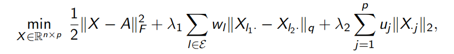

节点聚类问题的总结和思考
摘要
聚类作为经典的无监督学习算法，在数据挖掘/机器学习等领域有着广泛地应用。聚类是针对给定的样本，依据它们的特征的相似度或距离，将其归并到若干“类”或“簇”中。其目的是通过得到的类或簇来发现数据的特点，或对数据进行处理。本文的主要内容分为两个部分，在第一部分，对 K-均值聚类、凸正则化聚类、非凸正则化聚类、数据驱动的正则化聚类、子空间聚类等聚类优化方法进行简要总结。在第二部分，研究利用图神经网络强大的结构捕获能力来提升聚类算法的精度，即采用深度神经网络来学习聚类友好表征。最后，对这两部分进行简要的总结和思考。
1 聚类优化方法
物以类聚，人以群分。经过了几十年的研究，学者们提出了大量的聚类方法。聚类分析计算方法可以作如下分类，以提供一个相对有组织的描述。
- 划分式聚类算法
- 层次化聚类算法
- 基于密度的聚类算法
- 基于网格的聚类算法
- 基于模型的聚类算法
接下来对 K-均值聚类、凸正则化聚类、非凸正则化聚类、数据驱动的正则化聚类、子空间聚类等聚类优化方法进行简要总结。
1-1 K-均值聚类
K-均值聚类方法最早由 Steinhaus 于 1955 年提出，在不同的学科领域被广泛研究和应用，K-均值聚类方法是数据发掘领域的十大经典算法之一。对于给定的数据样本点 $a_1, a_2, …, a_n$，K-均值聚类通过求解如下优化模型实现：
1.2 凸正则化聚类方法
Pelckmans 于 2005 年首次提出凸正则聚类方法，其优化模型如下：
其中，$\lambda$ 是正则化参数， $\Vert \cdot \Vert_q$ 是 $l_q$ 范数。当数据量较大时，计算正则化项的值需要消耗巨大的计算量，因此，研究人员基于kNN 策略提出了带权重的正则化聚类模型：
常见的权重 $w_ij$ 的计算方法有：k-最近邻和k-最近邻+高斯核。
1.3 非凸正则化聚类方法
Pan 等人于 2013 年提出使用截断 Lasso 惩罚函数作为正则化的非凸正则化聚类方法，以消除凸正则化函数导致的估计偏差。其优化模型如下：
其中 $\tau$ 是给定的常数，截断 Lasso 可以当做是 $\ell_0$ 范数的非凸连续松弛。
1.4 数据驱动的正则化聚类
数据可以分为高维数据、含离群点的数据、缺失数据和其他类型数据。
（1）高维数据驱动的正则化聚类方法
Wang 等人对高维数据集提出基于自适应组 Lasso 惩罚的正则化聚类模型：

模型的最后一项的作用是迫使 X 的某一列为 0，从而达到剔除相应的特征的效果。
（2）含离群点数据驱动的正则化聚类方法
对离群点（异常点）的处理主要有三类方法：矩阵分解法、度量学习法、稳健损失函数法。
（3）缺失数据驱动的正则化聚类方法
Poddar 和 Jacob 基于数据间的部分距离（partial distance）提出可用于含缺失值数据的正则化聚类方法，其优化模型为：
其中，$S_i$ 为采样矩阵。因为数据矩阵有缺失值，所以权重 $w_I$ 只能基于样本之间的部分距离进行近似计算。
（4）其他类型数据驱动的正则化聚类方法
其他的数据类型包括：二元数据（Binary data）、成分数据（Compositional data）、图结构数据（Graph-structure data）、直方图值数据（Histogram-valued data）。
1.5 子空间聚类方法
很多高维数据往往分布在低维结构中，从高维数据中恢复这些低维子空间，不仅可以降低算法的计算成本和内存需求，还可以降低高位噪声的影响，进而提升算法的性能。子空间聚类方法是将特征选择技术和聚类技术相结合，并在维度空间或数据空间中搜索可能存在的子空间，从而得到聚类结果簇及其对应的子空间。现有的子空间聚类算法可以分为四大类：迭代方法、代数方法、统计方法和基于谱聚类的方法。子空间聚类方法可以归纳为如下统一模型：
| 聚类方法 | 优点 | 缺点 |
|---|---|---|
| K-均值聚类 | (1) 算法原理简单，运行速度快，收敛快 (2) 算法可解释性强 | (1) 依赖于初始的聚类中心，会陷入局部最优解； (2) 需要提前给定聚类类别数K |
| 凸正则化聚类 | (1) 取得了丰富的研究成果 | (1) 正则化函数可能导致估计量的偏差严重 |
| 非凸正则化聚类 | (1) 消除了凸正则化函数导致的估计偏差 | (1) 理论研究，高效一阶、二阶优化算法的设计还需要深入研究 |
| 数据驱动的的正则化聚类 | (1) 特征选择，剔除了大量冗余的特征 (2) 消除了离群点（异常点）的干扰 (3) 缺失数据点可以通过采样数据间的部分距离解决 (4) 应用于多种数据类型 | |
| 子空间聚类方法 | (1) 低算法的计算成本和内存需求 (2) 降低高维噪声的影响 |
2 深度聚类（Deep Clustering）
图神经网络已经成为深度学习领域最热门的方向之一，那么，如何利用图神经网络强大的结构捕获能力来提升聚类算法的精度呢？深度聚类是聚类方法的一种，它采用深度神经网络来学习聚类友好表征。对于图聚类问题，其中的关键是如何捕捉结构关系和节点内容信息。很多近期的研究通过深度学习方法学习到节点的嵌入（Embedding），再利用简单的聚类算法（如 K-Means）进行聚类，以增强传统聚类算法的性能。
图神经网络聚类与子空间聚类存在着联系与交集。研究发现，随着数据维度的上升，任何高维空间里的两点之间的距离（相似度）几乎没有区别，这就使得基于距离的相似度聚类方法失效。对于高维数据的聚类任务，最常用的处理方法就是降维，然后将降维后的特征应用于聚类算法。
一般来说，这个降维后的特征可以称之为节点的嵌入（Embedding），相比于原来的高维空间的特征，降维后的低维度特征空间是聚类友好的特征空间（Clustering-friendly space）。所以聚类任务的其中一个目标是学习得到对聚类任务友好的特征空间的节点嵌入，再在此基础之上应用聚类算法，以取得良好的聚类结果。
下面我介绍图聚类中的三篇经典文献：图注意力网络（Graph Attention Network）、深度聚类网络（Deep Clustering Network）和一种深度注意力的嵌入方法（A Deep Attentional Embedding Approach）。第一篇文献使用注意力机制学习节点的嵌入，第二篇介绍非目标导向的单阶段聚类方法，第三篇文献介绍以目标为导向的单阶段聚类方法。
2.1 Graph Attention Network[2]
图注意力网络应用注意力机制将邻居节点的特征聚合到中心节点（一种Aggregate运算），注意力系数的使用，使得节点特征之间的相关性被更好的融合到模型中。
左图为计算注意力系数（Attention coefficient）。即节点 $i$ 和其邻居节点 $j \in N_i$ 之间的相关性，是通过可学习的参数W和映射 $\overrightarrow{a}$ 实现的。右图为加权求和，将邻居节点的特征聚合到中心节点上，更新特征，$\overrightarrow{h’}_l$ 就是融合了所有邻居节点的新特征表达。图注意力网络学习得到的节点嵌入融合了节点内容和图的结构信息，相当于学到了对聚类任务友好的特征空间（Clustering-friendly space）。
2.2 two-stage方法
两阶段（two-stage）方法将聚类任务分为两个独立的阶段。第一阶段，先学习得到对聚类友好的节点嵌入（如神经网络、GAT 等 Aggregate 函数）；第二阶段，应用传统的聚类方法（如 K-means）进行聚类。两阶段方法存在一个明显的缺点，它是非目标导向的方法，我们最终的目标是得到好的聚类结果，而不是好的聚类空间节点嵌入，而且我们也无法知道所学到的聚类空间是否最优的。因此，将两阶段方法优化为单一阶段进行统一优化是非常必要的。
2.3 single-stage方法[4]
论文[3]将数据降维和 K-means 聚类这两项任务联合起来，克服了两阶段方法的缺点，但其仍然是非目标导向的。论文[4]则提出一种以目标为导向的深度学习方法：Deep Attentional Embedded Graph Clustering (DAEGC)。这种方法包含三个主要核心点：
（1）注意力机制的图自编码器（Graph Attentional Autoencoder）
（2）自训练的图聚类（Self-optimizing Embedding）
（3）自训练过程与图嵌入共同学习和优化（Joint Embedding and Clustering Optimization）
为了实现以目标为导向，针对聚类这个无监督学习任务，提出了一个自训练的聚类组件，从“置信”的分配中生成软标签，以监督嵌入的更新。聚类损失和自动编码器重建损失被联合优化，以同时获得图嵌入和图聚类的结果。
3 总结
聚类优化问题是不断发展的，图神经网络强大的结构捕获能力给传统的聚类方法注入了新的能量，在一定程度上缓解了传统聚类方法存在的不足，进一步提升了聚类性能。图神经网络可以聚合邻居信息来充分挖掘结构信息，为了同时实现对特征的降维抽取和对结构信息的挖掘。高阶结构信息（多层 GNN）也可以提升聚类的效果。从传统聚类到深度聚类以及现在图神经网络赋能的聚类, 各种各样的聚类算层出不穷,也在很多领域得到了广泛的应用。
参考资料
[1] 孔令臣. 第五讲：聚类优化方法. 2021.07
[2] Velickovic, P., Cucurull, G., Casanova, A., Romero, A., Lio’, P., & Bengio, Y. (2018). Graph Attention Networks. ArXiv, abs/1710.10903.
[3] Bo Yang, Xiao Fu, Nicholas D. Sidiropoulos, and Mingyi Hong. 2017. Towards K-means-friendly spaces: simultaneous deep learning and clustering. In Proceedings of the 34th International Conference on Machine Learning - Volume 70 (ICML'17). JMLR.org, 3861–3870.
[4] Wang, C., Pan, S., Hu, R., Long, G., Jiang, J., & Zhang, C. (2019). Attributed Graph Clustering: A Deep Attentional Embedding Approach. IJCAI.